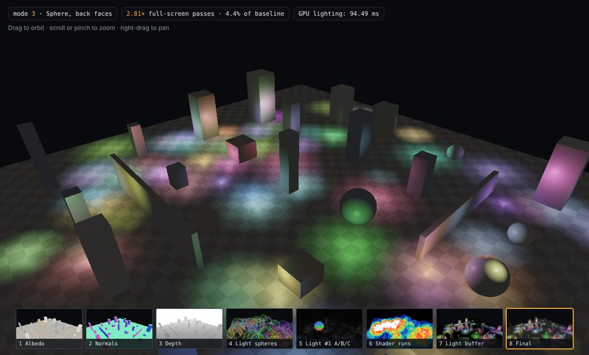
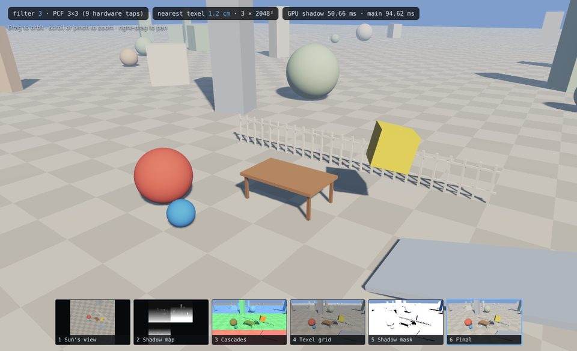
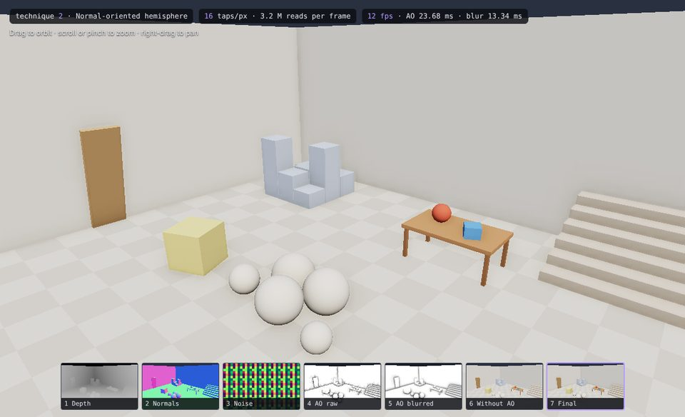
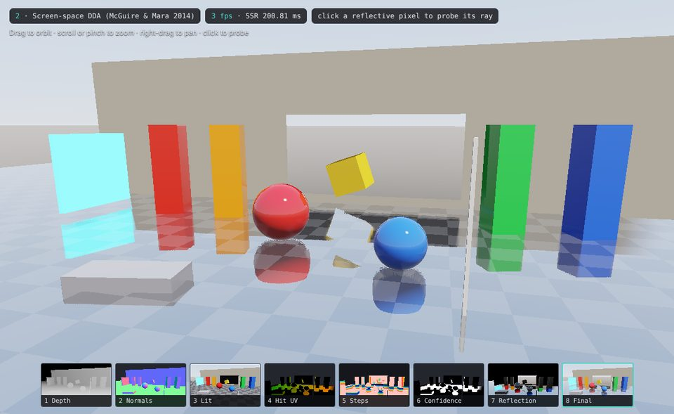
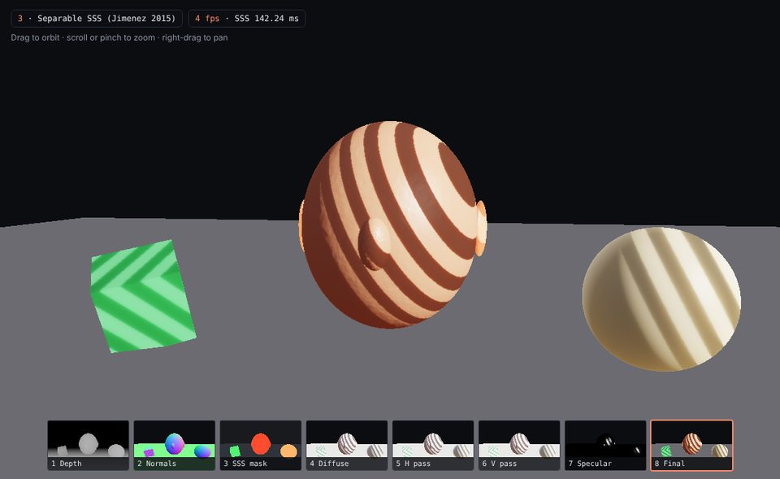
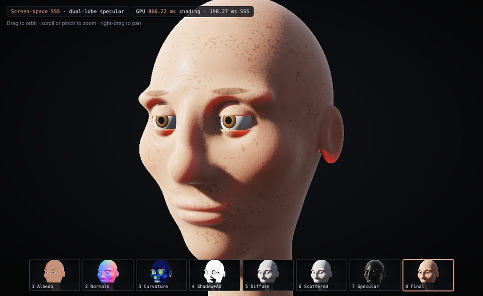
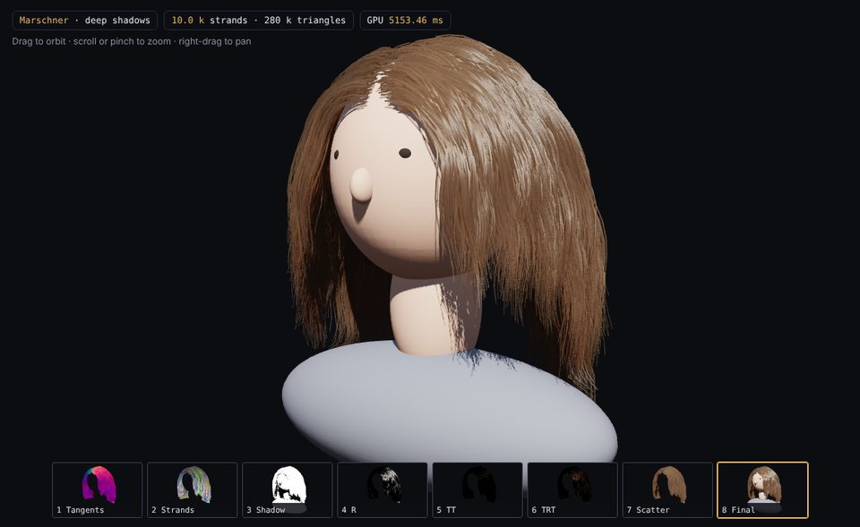
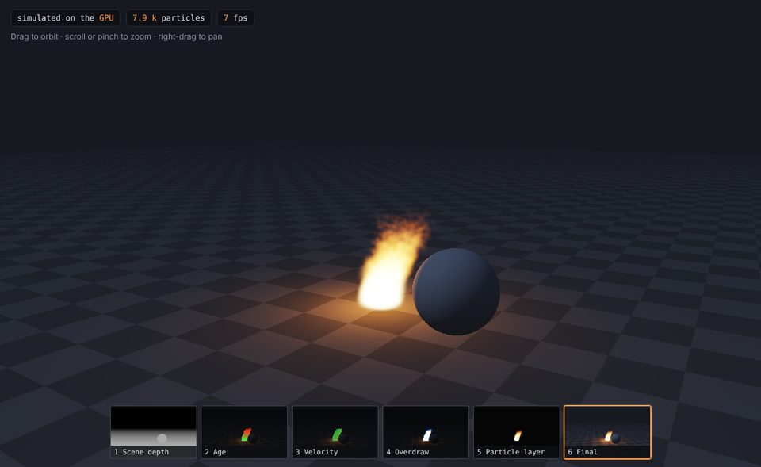
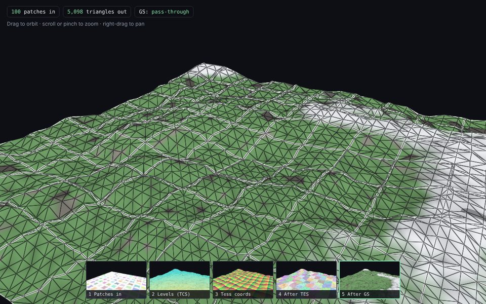
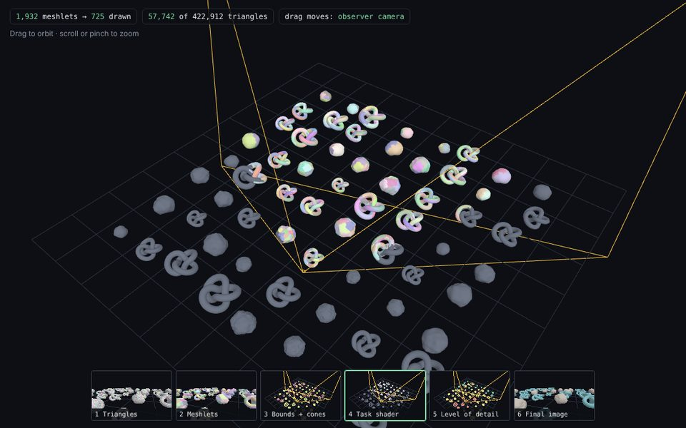

Lighting and shadows

Deferred light volumes
Light a G-buffer with many point lights. Each light is drawn as a sphere, so it only shades the pixels it can reach, and the cost is measured live.
Covers G-buffer, additive lighting, depth and stencil tests for light spheres.

Shadow mapping
A sun with cascaded shadow maps. Look at the sun's depth image, the cascades and the texel grid, then tune bias and filtering.
Covers cascades, bias, PCF, Poisson sampling, PCSS soft shadows.
Screen-space effects

Ambient occlusion (SSAO)
Darken corners, creases and contact points using only the depth and normals that are already on screen.
Covers Crytek, hemisphere, SAO and HBAO kernels, rotation noise, blur.

Reflections (SSR)
March each reflected ray through the depth buffer and reuse the lit color of the pixel it hits.
Covers linear and DDA ray marching, binary refinement, thickness, fades.

Subsurface scattering (SSS)
Blur diffuse light across the screen by a real-world distance, with a different width per color, for the soft look of skin, wax or jade.
Covers separable blur, skin and Burley diffusion profiles, transmission.
Materials

Realistic skin
Skin as a stack of layers on a ray-marched head: scattering, two specular lobes, pores, uneven color and light through thin parts. Switch each layer on and off.
Covers pre-integrated skin shading, dual-lobe specular, soft shadows, thickness.

Hair
Thousands of strands grown from guide hairs, drawn as camera-facing ribbons and lit with a fiber model instead of a surface normal.
Covers Kajiya–Kay, Marschner lobes, deep shadows, alpha to coverage.
Geometry and effects

Particle systems
Fire, smoke, sparks and snow from one system: spawn particles, move them with a few forces, retire the old ones, and draw each as a small textured square.
Covers CPU and GPU simulation, sorting, blending, soft particles.

Tessellation and geometry shaders
Turn a few coarse patches into as many triangles as each one needs, then change or add triangles one at a time. Emulated in WebGL 2.
Covers tessellation levels, spacing modes, Bézier patches, displacement, cracks.

Mesh shaders
Cut meshes into meshlets, cull them before any vertex work, and pick a level of detail per object. Emulated in WebGL 2.
Covers meshlet building, frustum and cone culling, level of detail.
Every lab runs in the browser with WebGL 2 and no build step. View a lab's page source to read its shaders.